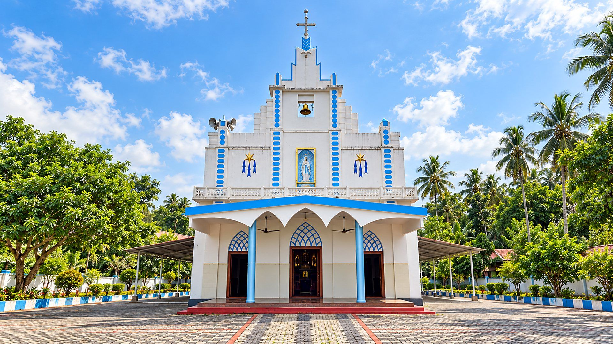

Lourde Matha Church, Thalayanadu, established in 1935, is a vibrant faith community rooted in prayer, service and fellowship. Guided by the love of Our Lady of Lourdes, we continue to grow in faith, unity and charity.
Learn MoreThe church is open daily from 6:00 AM to 8:00 PM
Holy Mass — 7:00 AM
Holy Mass — 9:30 AM
Holy Mass — 6:30 AM
Holy Mass — 6:45 AM
Lourde Matha Church is guided by our Vicar and the parish council, under the Thodupuzha Forane in the Syro-Malabar Eparchy of Kothamangalam.
Parish news, celebrations, announcements and upcoming events